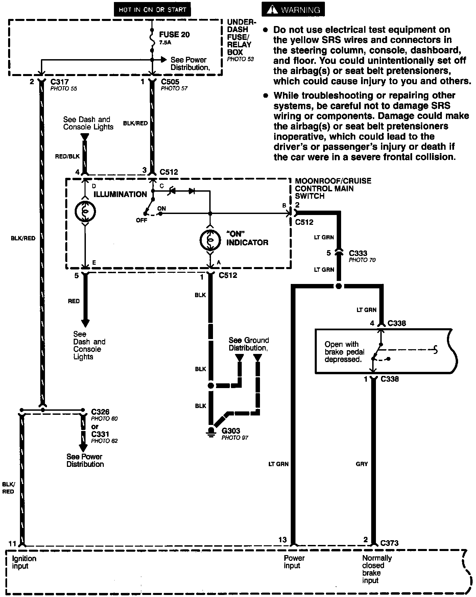
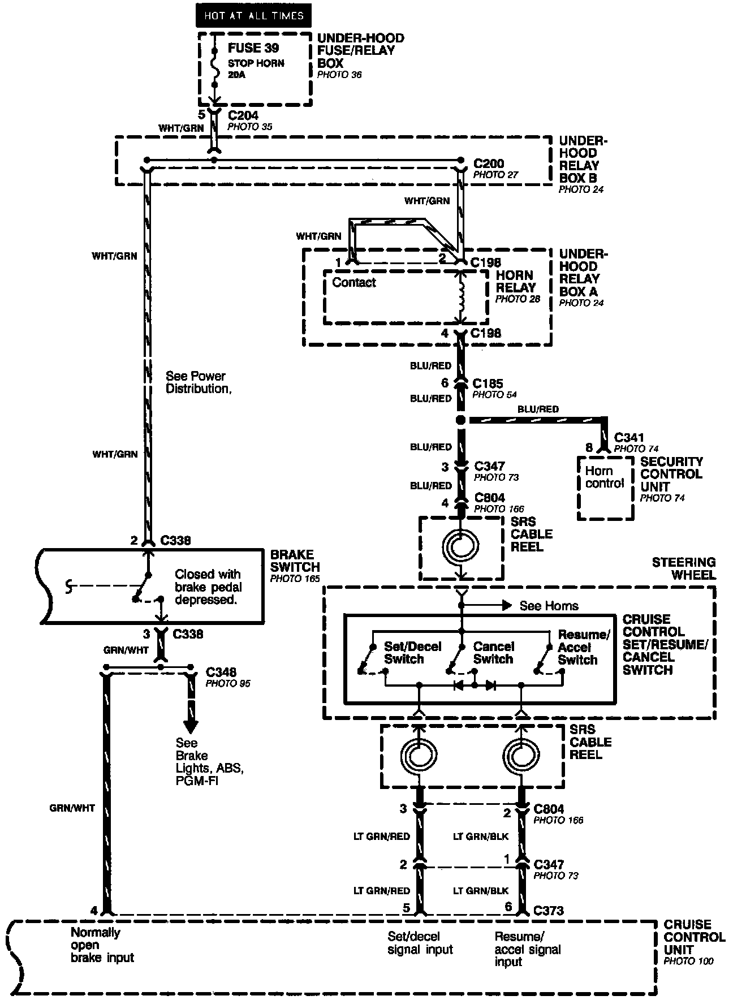
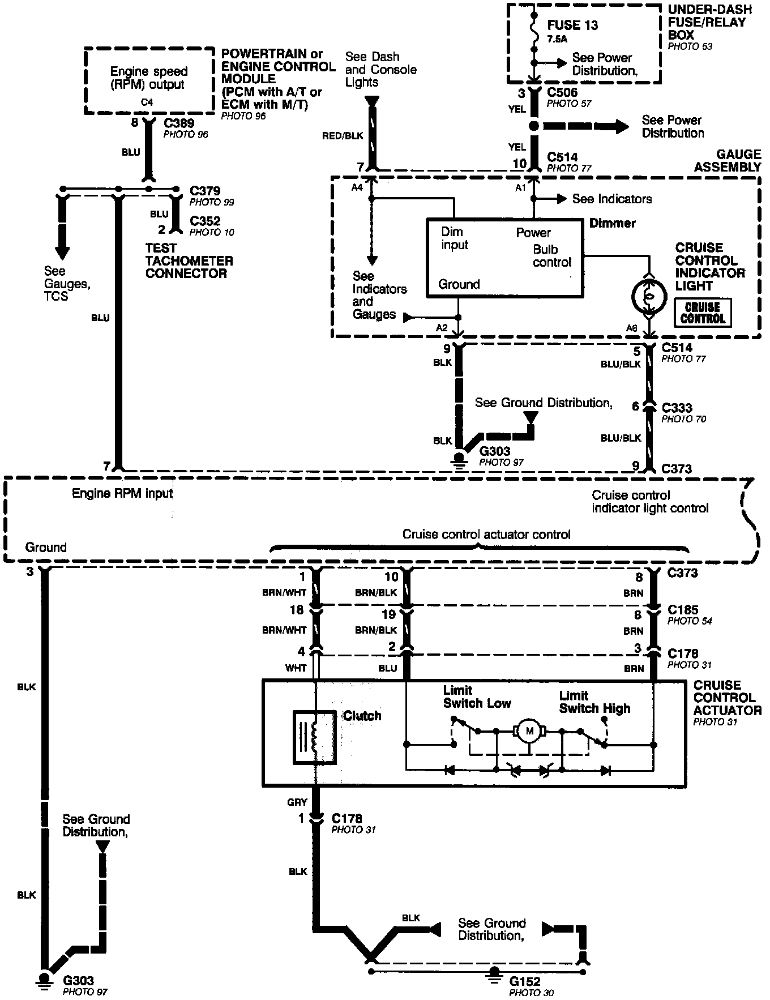
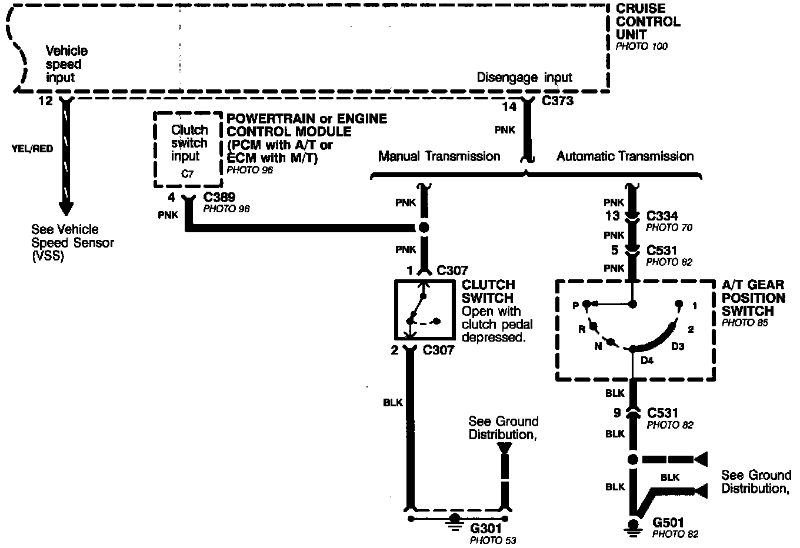

Operation CHARM
: Car repair manuals for everyone.
Home
>>
Acura
>>
1994
>>
Legend Coupe V6-3206cc 3.2L SOHC FI
>>
Repair and Diagnosis
>>
Diagrams
>>
Electrical Diagrams
>>
Cruise Control
Cruise Control
Cruise Control (Part 1 Of 4):

Cruise Control (Part 2 Of 4):

Cruise Control (Part 3 Of 4):

Cruise Control (Part 4 Of 4):
